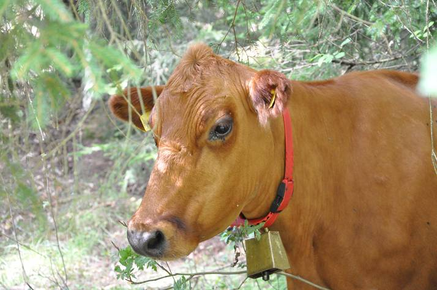
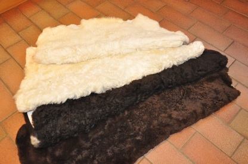
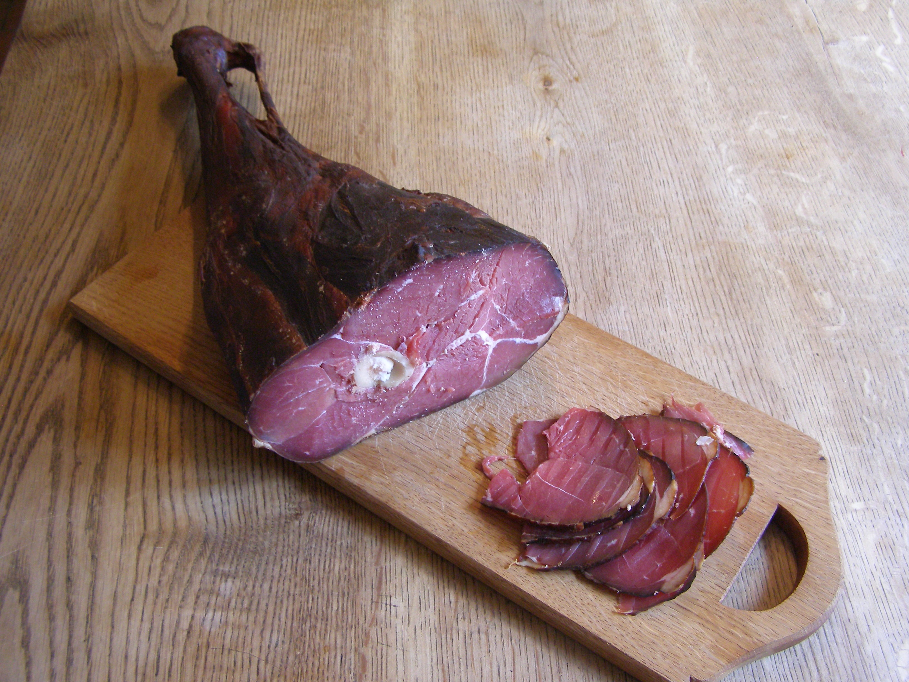
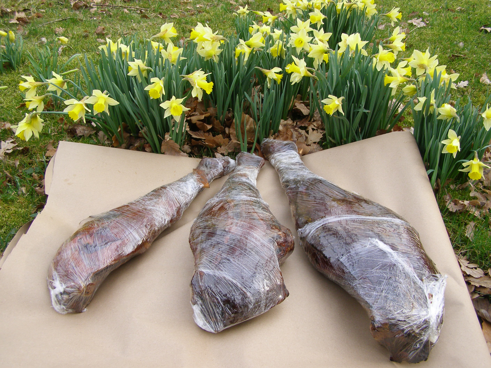

Vi slaktar vanligen under november, men ibland kan slaktfärdiga ungdjur finnas även under våren. Efter slakt hängmöras köttet nu till mognad ca tre veckor i kylrum istället för den lite för korta tid som vi hade förut. Detta kan vi göra tack vare samarbete med Skärshults Gård utanför Älmhult som har en modern anläggning. Därefter görs styckning och packning i lådor. Varje låda väger ca 10 kg och innehåller till hälften styckdetaljer från hela djuret samt hälften köttfärs. Inte alla djurets styckdetaljer finns i varje låda utan en fördelning sker så att varje låda skall vara ungefär likvärdig till innehåll och vikt. Detta för att inte varje detalj skall bli för liten utan väga ca 1,5 till 2 kg. Samtliga styckdetaljer är vacuumpackade och märkta med detaljens namn och vikt. Även köttfärsen är packad med förpackningar på 7 – 9 hg. Därmed är allt färdigt för frysen.
Exempel på styckdetaljer är rostas, fransyska, rulle, innanlår, ytterlår, ryggbiff, entrecote, bogstek och högrev. Köttfärs mals av övriga delar. Exakt vad som finns i en låda kan därför variera något. Detta förenklar styckarens och vårt arbete och genom detta kan vi också hålla ett lägre pris än om en mera detaljerad beställning vore möjlig. Fler detaljer får man vid köp av mer än en låda. Vissa detaljer finns inte i lådorna men kan beställas separat utöver 10- kiloslådorna i mån av tillgång. Det är t.ex. flankstek och filé. Beställda köttlådor kan hämtas på gården eller levereras direkt hem eller till en överenskommen plats för hämtning. För närvarande kör vi till närområdet kring Älmhult och Osby men också genom centrala Skåne ned till Lund. Du kan betala kontant, med Swish eller med de vanligaste korten (via iZettle). Den utökade och nya hanteringen av djuren gör att vi måste höja priset en del men vi tror att högre kvalitet och förenkling för våra kunder motiverar detta. I jämförelse ligger vi fortfarande lågt i pris.Slakt sker vanligen i oktober-november, men ibland kan mindre lamm hållas över vintern och slaktas till påsk. Efter slakten hänger lammen några dagar i kylrum innan de styckas och packas i lådor. Styckdetaljerna är lårstekar, bogstekar, sadel, hals, slag och läggar. För att underlätta för våra kunder har vi bestämt en grundstyckning som alla får om man inte anger vilken styckning man önskar. Styckningen ser ut så här med alternativen inom parentes: lår som delade stekar med ben (alternativ hela stekar), bog som hela stekar, sadel skivad som fjärilskotletter (alternativ lång sadel), rygg skivad (alternativ hel rygg), hals skivad, slag hela och lägg delade. Lårstekarna kan också fås som hela fårfioler om man vill ha dem till saltning och rökning.
Annan styckning är naturligtvis också möjlig om ni har speciella önskemål. Att leverera ostyckade lamm är naturligtvis möjligt men vi vill helst undvika det av praktiska skäl. Lammen väger oftast 14 – 19 kg. Endast hela lammlådor säljs, men om du tycker det är för mycket så dela med en granne. Vårt pris är för närvarande 125 kr/kg.
|
När vi slaktar våra lamm tar vi skinnen i retur och låter bereda dem som tvättbara
skinn med ullen nedklippt till ca 25 mm. Skinnen är sköna att ha i barnvagnen, bilen,
läsfåtöljen eller varhelst du vill ha det skönt. Ullens egenskaper gör skinnen idealiska
för både små barn och vuxna. Ryafåren är kända för sin glansiga ull vilket ger mycket
fina skinn. Eftersom vi har får med olika färg finns skinnen vita, svarta och ett fåtal
bruna. Beroende på storlek, glans, färg och kvalité varierar priset mellan 700 och
1.400 kr per styck.
Fina skinn från vuxna djur kan vara något dyrare. De tvättbara skinnen är lättskötta och tål regelbunden tvätt. Skötselråd medföljer varje skinn. Skötselråd: Maskintvätt på ullprogram 30 grader. Vid handtvätt använd milt schampo med pH 3,5 - 5,5. Torka hängande eller liggande på galler. Sträck lätt. Skölj av mindre fläckar för hand. Vädra och skaka skinnen. Beställ skinn |
 |
Vi tar för närvarande endast hand om den ull vi själva vill använda, men det går bra
att beställa ull om man själv vill prova på att tova, spinna eller annat. Då sorterar vi ut
den finaste ullen på fåren när vi klipper dem, vilket vi gör två gånger per år. Ryaullen
är långvågig och glansig och perfekt att tova med. Du kan få den vit, svart eller brun.
Priset är 30 kr per kilo ull.
Eventuella fraktkostnader tillkommer.
Beställ ull
Vi sparar numera några ostyckade bakben (fårfioler) från våra lamm och vuxna djur i samband med slakt. Vi lämnar dem till saltning och kallrökning. Det blir ett mycket delikat kött som blev mycket uppskattat av våra kunder. Köttet lämpar sig som tilltugg till öl eller vin eller tillsammans med ägg eller äggrätter eller efter egen smak.
Kom bara ihåg att skära tvärs över musklerna i tunna skivor. Detta är särskilt viktigt i den smala nedre delen av fiolen där det är mycket hinnor mellan musklerna. Vikten ligger mellan 1,8 och drygt 4 kg, beroende på djurets storlek.
Lammfiol kostar hel 295 kr/kg och delad 240 - 325 beroende på bit.
 
Samtliga korvar tillverkas av Åkes Hemlagade i Tingsryd i södra Småland av kött från våra djur med tillsats av späck, kryddor och salt beroende på vilken korv det är. En del röks också.
Falukorv
En klassisk falukorv tillverkad av köttfärs från en väl hängmörad rödkulleko. Mycket smakrik korv. Pris: 80:- kr per förpackning om 500 g.
Lammkabanoss
En grillkorv tillverkad av kött från våra ryalamm och ryafår. Relativt mild kabanosskryddning. Pris: 90:- kr per förpackning om 540 g med fyra korvar.
Ramslöksalsiccia
En grillkorv tillverkad av kött från våra ryalamm och ryafår. Ganska kryddig korv med ramslök. Lättrökt. Pris: 45 kr per förpackning, om 270 g med två korvar.
Höstens trattkantareller som torkats och lagts i en glasburk med lock. Varje burk innehåller 10 g, vilket motsvarar en halv liter välrensade färska trattkantareller. Fin smaksättare av såser mm. Mycket lång hållbarhet. Pris: 43:- kr per burk.
Av rönnbär och vildäpplen har vi kokat gelé med tillsats av sylt- och multisocker. I glasburk om 320 ml. Lång hållbarhet. Pris: 100:- kr per burk.